INTRODUCCIÓN A SERIES DE TIEMPO
2021-09-23
Capítulo 1 ¿Qué es una de serie de tiempo?
library("readr")
library("xts")
library("zoo")
library("astsa")
library("forecast")
library("ggplot2")
library("forecast")
library("ggfortify")
library("stargazer")
library("urca")
library("dynlm")
library("scales")
library("quantmod")
TRIM<-as.xts(read.zoo("FINAL_HN.csv", index.column = 1, sep = ";", header=TRUE, format = "%d/%m/%Y"))
MES<-as.xts(read.zoo("MES_HN.csv", index.column = 1, sep = ";", header=TRUE, format = "%d/%m/%Y"))
IMAE<-MES$IMAE
P<-ggplot2::autoplot(log(IMAE))+xlab("Year")+
ggtitle("LOGARITMO DEL IMAE EN HONDURAS")P1.1 Serie Ruido Blanco (WN)
X_WN<-arima.sim(list(order=c(0,0,0)), n=1000, mean=4, sd=2)
autoplot(X_WN)+
ggtitle("Serie Ruido Blanco")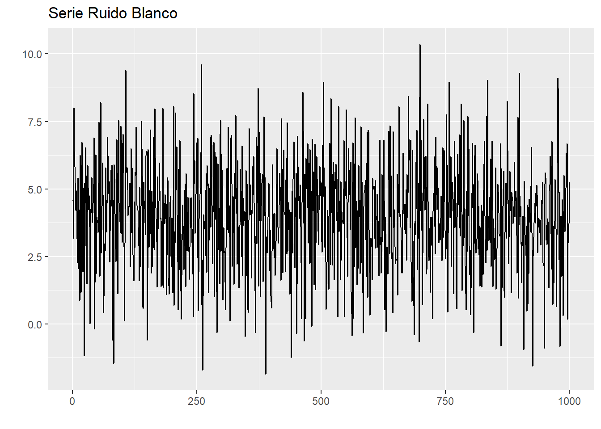
1.2 Serie Random Walk (RW)
X_RW<-arima.sim(list(order=c(0,1,0)), n=100)
autoplot(X_RW)+
ggtitle("Serie Random Walk")white_noise <- arima.sim(list(order = c(0, 0, 0)), n=100)
random_walk <- cumsum(white_noise)
wn_drift <- arima.sim(list(order = c(0, 0, 0)), n=100, mean=0.4)
rw_drift <- cumsum(wn_drift)
plot.ts(cbind(white_noise, random_walk, wn_drift, rw_drift))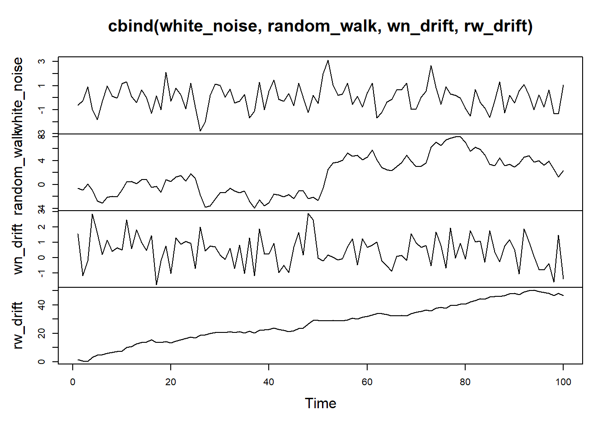
1.3 Proceso ARMA
Simulando un proceso AR(1)
X_AR1<-arima.sim(list(order=c(1,0,0), ar=c(0.90)), n=100)
autoplot(X_AR1)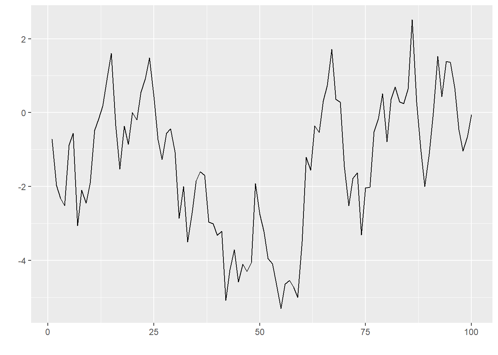 Simulando un proceso AR(2)
X_MA1<-arima.sim(list(order=c(0,0,1), ma=c(-0.98)), n=100)+50
autoplot(X_MA1)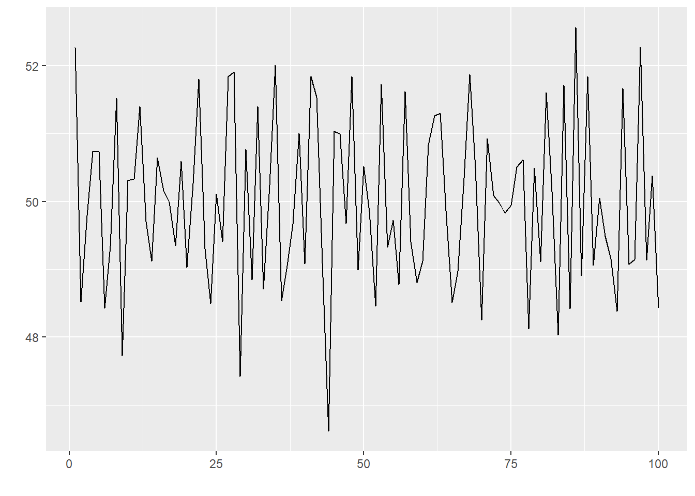
Correlación entre el nivel del PIB de Honduras y el de USA
USA<-coredata(log(TRIM$PIB_USA["2001-01-01/"]))
HN<-coredata(log(TRIM$PIB["2001-01-01/"]))
cor(USA,HN)## PIB
## PIB_USA 0.9775886Scatter plot
plot(cbind(USA, HN))Correlación entre el la tasa de crecimiento del PIB de Honduras y el de USA
USA<-coredata(diff(USA, lag=4))
HN<-coredata(diff(HN, lag=4))
cor(USA,HN)## PIB
## PIB_USA 0.5405966Scatter plot
plot(USA, HN)Función de autocorrelación del PIB de Honduras
PIB<-as.ts(HN)
acf(PIB, lag.max = 24, plot=TRUE)Función de autocorrelación parcial del PIB de Honduras
PIB<-as.ts(HN)
pacf(PIB, lag.max = 24, plot=TRUE)Función de autocorrelación de un proceso ruído blanco
acf(X_WN, lag.max = 24, plot=TRUE)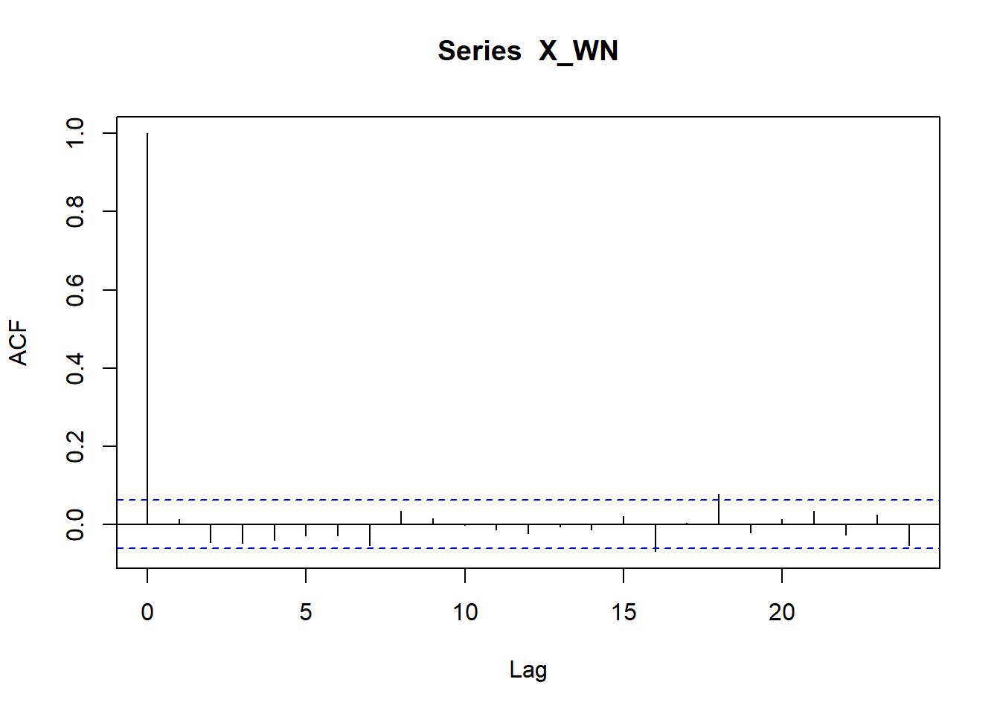
Función de autocorrelación parcial de un proceso ruído blanco
pacf(X_WN, lag.max = 24, plot=TRUE)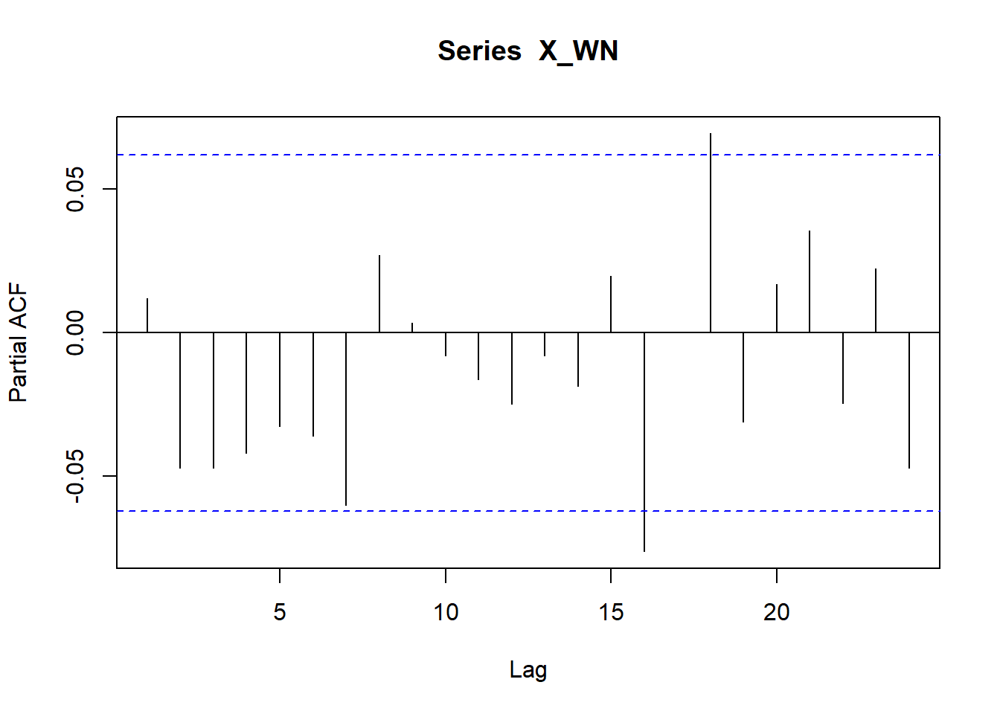
Función de autocorrelación de un proceso RW
acf(X_RW, lag.max = 24, plot=TRUE)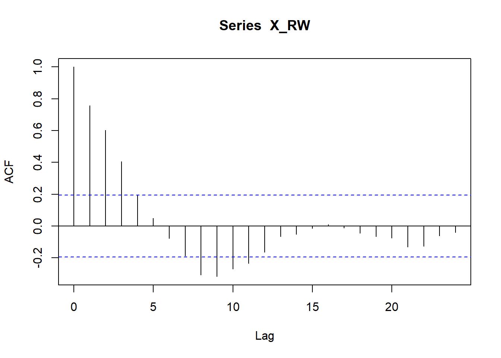
Función de autocorrelación parcial de un proceso RW
pacf(X_RW, lag.max = 24, plot=TRUE)Función de autocorrelación de un proceso AR(1)
acf(X_AR1, lag.max = 24, plot=TRUE)Función de autocorrelación parcial de un proceso AR(1)
pacf(X_AR1, lag.max = 24, plot=TRUE)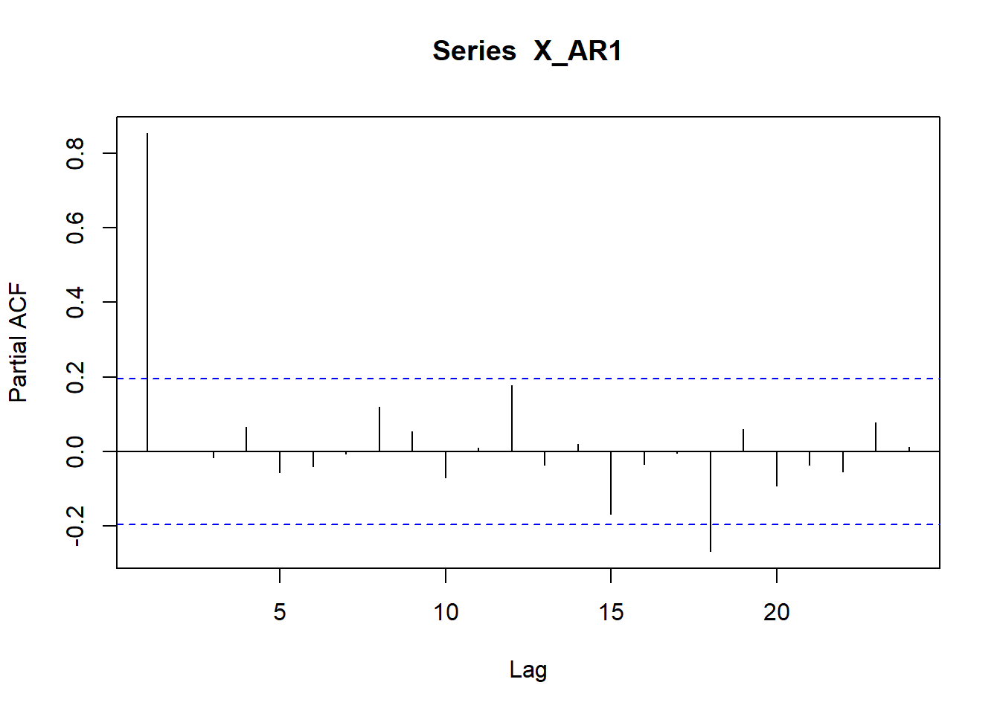
Función de autocorrelación de un proceso MA(1)
acf(X_MA1, lag.max = 24, plot=TRUE)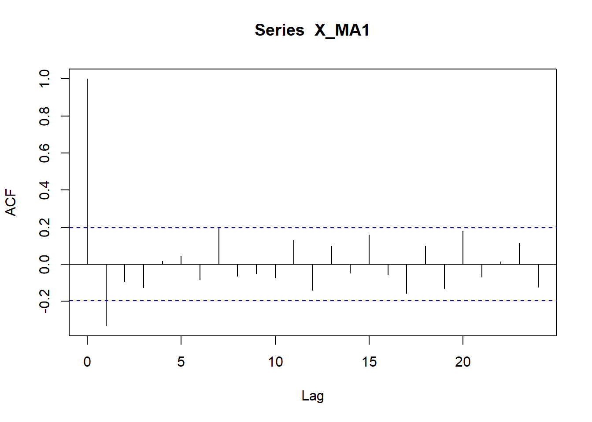
Función de autocorrelación parcial de un proceso MA(1)
pacf(X_MA1, lag.max = 24, plot=TRUE)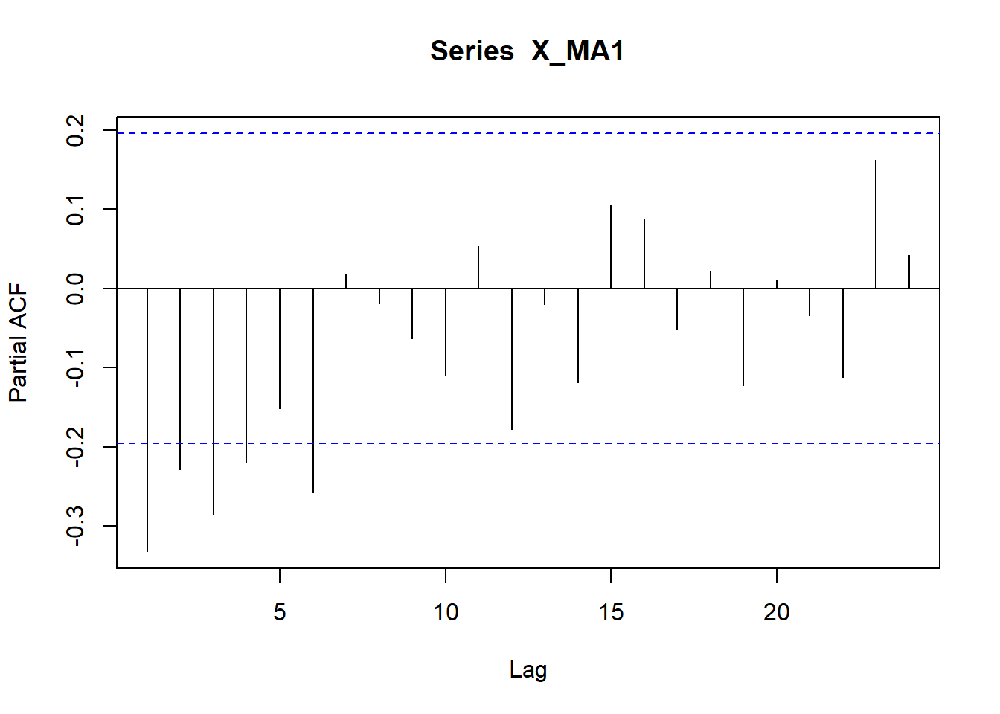
1.4 Simulación de procesos
###Estimación de un procesos SARIMA(1,0,1,1,1,1)
model <- Arima(ts(rnorm(100),freq=4), order=c(1,0,1), seasonal=c(1,1,1),
fixed=c(phi=0.0, theta=-0.0, Phi=0.0, Theta=-0.0))
X_SARIMA<- simulate(model, nsim=200)
plot(X_SARIMA)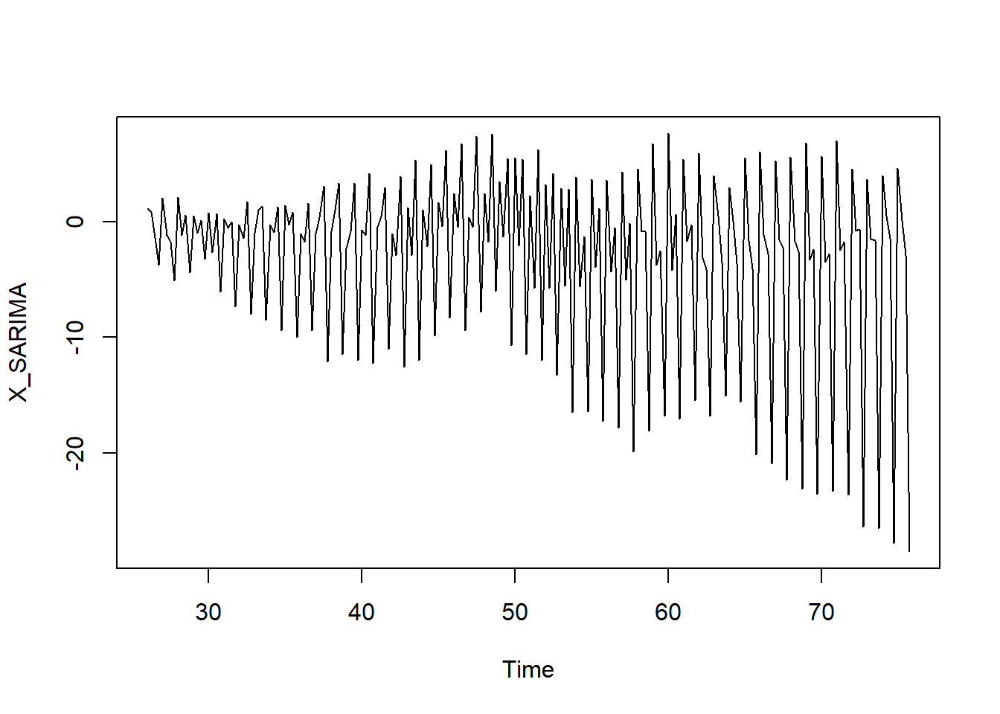
1.4.1 Estimación de un proceso ARIMA
x<-arima.sim(list(order=c(0,0,2), ma=c(1.5,-0.75)), n=100)+50
x_fit<-sarima(x, p=2, d=0, q=0)
x_fit$ttable